MLB는 국내 2030 소비자 회복을 위해 한정판 · 행사 · 협업 · 유튜브 · 밈처럼 2030이 실제로 반응하고 공유하는 마케팅으로 버즈를 만들어왔습니다. 다만 그 버즈는 볼캡·비니 같은 저관여 상품과 브랜드 차원에서 주로 만들어졌고, 패딩 같은 고관여 상품을 소재로 한 버즈는 상대적으로 부족한 상황입니다. 이 자료는 AI로 2030이 반응하는 콘텐츠·밈을 발굴하고, 26FW 커브패딩을 소재로 2030이 반응할 콘텐츠·캠페인 아이디어를 제안합니다.
상황에서 과제를 정하고, 경쟁사와 트렌드를 분석해, MLB에 녹일 트렌드·밈을 특정한 뒤 아이디어로 연결했습니다. 각 단계의 답이 다음 단계의 질문이 됩니다.
MLB는 지금 무엇을 해야 하나?
저관여·브랜드 중심 버즈를 고관여 상품인 패딩으로 넓힌다.
경쟁사는 패딩으로 어떤 콘텐츠를 만들었나?
제품 특징을 사건 · 순서 · 경험으로 나눠 보여줬다.
2030이 반응하는 콘텐츠의 특성은?
보는 재미 위에 고르고 · 남기고 · 공유할 자리.
MLB와 패딩에 녹일 트렌드·밈은?
네 가지 설계 원리로 거른 트렌드·밈 4가지.
커브패딩과 어떻게 결합하나?
같은 원리를 서로 다른 소비자 경험으로.
자사·경쟁사·트렌드의 서로 다른 자료에서 얻은 단서를 이번 과제에 맞게 네 가지로 종합했습니다. 성공을 보장하는 공식이 아니라, 아이디어를 설계하고 비교하는 기준입니다.
단발 이벤트가 아니라,
고르고 · 보여주고 · 쌓이는 반복 포맷
보는 재미 위에 고르고 · 남기고 · 공유할 자리를 더합니다. 이번 안에서는 트렌드의 네 축(촉감 · 참여 · 불안관리 · 기록) 중 참여와 기록을 우선 검토했습니다. 네 제품 중 고르는 행위가 참여가 되고, 착장은 원래 기록의 대상입니다.
세 방향에서 각각 다른 자료로 봤습니다. 모든 수치는 원문 집계값이며 추정치는 포함하지 않았습니다.
분석 과정에서 걸러낸 논리 비약과 표현 기준입니다.
부록 탭에는 근거대장 · 사용/제외 판단 · 제작 체크리스트 · 예상 Q&A가 들어 있습니다.
MLB가 2030에게 어떻게 버즈를 만들어왔는지 보고, 26FW에 무엇이 필요한지에서 이번 과제를 도출했습니다.
MLB는 2030이 반응하는 마케팅으로 버즈를 만들어왔습니다.
이제 그 버즈를 고관여 상품인 패딩으로 넓힐 차례입니다.
MLB의 현재 마케팅에서 출발해, 26FW에 풀어야 할 과제를 네 단계로 정리했습니다.
AI로 2030이 반응하는 콘텐츠 · 밈을 발굴하고,
패딩을 소재로 2030이 반응할 콘텐츠 · 캠페인 아이디어를 제안합니다.
이를 위해 ① 경쟁사는 패딩으로 어떤 콘텐츠를 만들어 상품을 인식시키는지(CH.2), ② 2030이 반응하는 콘텐츠에는 어떤 특성이 있는지(CH.3)를 분석했습니다. 그 인사이트로 MLB와 패딩에 녹일 트렌드 · 밈을 특정하고(CH.4), 아이디어로 연결했습니다(CH.5).
2030이 실제로 반응하고 공유한 대표 캠페인 셋입니다. 성과 순위가 아니라 서로 다른 접근 방식을 보여줍니다.
| 카리나 에디션 | 키스오브라이프 × 워터밤 | TWS 숏폼 드라마 | |
|---|---|---|---|
| 2030 반응 방식 | 한정판 — 갖고 싶게 | 행사 · 협업 — 찍어 올리게 | 유튜브 · 숏폼 — 기다리게 |
| 시기 | 25FW 9월 ~ 26SS | 26SS 6–8월 | 26SS 5–6월 |
| 구조 | 에디션 → 화보 → 행사 | 공항패션 → 화보 → 무대 → 에디션 | 티저 → EP.1 → EP.2 → EP.3 |
| 엔진 | 희소성 + 리셀가 | 직캠·팬캠 (현장 6만 명) | 세계관·플롯 |
| 화제 | PPL 좋아요 120만 · 댓글 4천 | 1억뷰 · 오가닉 1,200건 | EP.1 댓글 407 (계정 최대) |
| 성과 포인트 | 연계 매출 +10% | 에디션 품절 · 리셀가 130% | 회차가 갈수록 제품 관련 댓글 비중 1.7% → 9.2% |
| 비용 | 생산금 1억 미만 | 광고 매체비 미집행 · EMV 30억 | 행사 1,400만 |
| 아이템 | 모자 | 무대의상 커스텀 | 티셔츠 · 모자 |
MLB는 2030이 반응하는 방식으로 버즈를 만들 줄 압니다.
다만 그 주인공은 모자 · 티셔츠 · 무대의상이었습니다.
카리나 에디션은 갖고 싶게, 워터밤은 찍어 올리게, TWS는 다음 화를 기다리게 만들었습니다. 세 사례의 아이템은 모두 저관여 상품이었고, 고관여 상품인 패딩을 소재로 한 버즈는 상대적으로 적었습니다.
세 캠페인을 각각 — 무엇을 했고, 2030이 어떻게 반응했고, 패딩으로 넓힐 때 무엇을 가져올 수 있는지.
월간 검색량 18만의 셀럽 화제성을 제품으로 넘기는 것. 그리고 그 화제를 판매로 회수하는 것.
25/9/22 성수 행사는 “바이럴 따로 진행 안 한 부분에서도 자동적으로 오가닉 형성”됐다는 기록이 남아 있습니다.
엔진은 희소성이었습니다. 생산금 1억 미만으로 연계 매출 +10%를 만든 구조로, 사내에서 대표적인 회수 사례로 꼽힙니다. 사내 용어로는 “화제성 회수 지점”이라 부릅니다.
희소성이 ‘갖고 싶은 아이템’을 만들었다면, 패딩처럼 오래 비교하고 고르는 제품에는 ‘나에게 맞는 커브를 고르는 경험’이 같은 역할을 할 수 있습니다. 화제를 고르는 재미로 잇는 것이 다음 단계입니다.
26SS 여름 시즌, 브랜드 화제를 만들어야 했습니다. 셀럽 선정 근거도 수치로 남아 있습니다 — 월간 검색량 10만(6–7월 14만 피크), 국내 걸그룹 팔로워 9위, 시즌 화제성 1위. 평가 노트는 “페미닌 힙 기반의 퍼포먼스형 바이럴에 가장 최적화된 아티스트”였습니다. 모델료는 그룹 1.8억(3개월).
오가닉 1,200건은 브랜드가 만든 숫자가 아닙니다. 현장의 6만 명이 찍어 올린 것입니다. 회사는 이미 ‘따라하고 싶은 커스텀 스타일링 자체를 콘텐츠화’한다고 적었고, 오가닉 확산을 성과 지표로 계량했습니다.
사내 브리지 문서는 11월 윈터 행사를 티저 → 착장 공개 → 재확산의 같은 3단계로 설계했습니다. 여름의 재확산을 무대 직캠이 맡았다면, 겨울에는 거리와 일상에서 사람들이 찍어 올릴 장면을 새로 설계할 차례입니다.
26SS 5월 보고(0519)의 「MLB 매장에 출근한 TWS」 세계관 · #MLB알바생 #세계관연결. 기획 의도는 ‘일상 공간 × 아이돌 비주얼 = 반전’이라는 구조를 가져온 것이었습니다. 6/4 티저 → 6/8 본편으로 집행됐습니다.
| 좋아요 | 수집 댓글 | 제품 관련 댓글 | 비중 | |
|---|---|---|---|---|
| EP.1 수상한 데빌캡을 발견하다 | 56K | 175 | 3 | 1.7% |
| EP.2 신유 신입사원의 운명은? | 24K | 109 | 6 | 5.5% |
| EP.3 데빌캡이 바꾼 운명 | 14K | 76 | 7 | 9.2% |
EP.1이 좋아요 반응이 가장 컸고, 수집 댓글 중 제품 관련 비중은 회차가 갈수록 1.7%에서 9.2%(7/76건)로 늘었습니다. 제품이 결론에 가까운 편에서 제품 대화가 가장 많이 관측됐습니다. 이를 참고해 이번 제안에서는 편마다 역할을 처음부터 설계합니다.
「MLB 모자를 썼더니 ［ ］이 되었다」가 댓글에서 변형되기 시작했습니다.
제품이 플롯의 동력이었습니다. 제목 「MLB 모자를 썼더니 ［ ］이 되었다」가 빈칸처럼 작동해 댓글에서 변형이 돌았고, 제품이 결론에 가까워질수록 제품 이야기가 늘었습니다. 숏폼 시리즈에서 회차별 역할을 나누는 법을 MLB가 이미 확인한 셈입니다.
모자가 ‘쓰면 본부장이 된다’는 설정으로 이야기를 열었다면, 커브패딩은 넥·후드·볼륨·표면이 실제로 달라 바꿔 입는 순간 화면에서 차이가 보입니다. 처음부터 제품의 실물 특징이 이야기를 움직이게 설계할 수 있습니다.
세 캠페인에서 확인한 것을, 고관여 상품인 패딩으로 넓힐 때 무엇이 필요한지.
| 대표 캠페인에서 확인한 것 | 패딩으로 넓힐 때 필요한 것 |
|---|---|
| A 희소성을 설계하면 생산금 1억 미만으로 매출 10%를 올린다 | 오래 고르는 제품인 패딩에는 ‘나에게 맞는 커브를 고르는 경험’을 더한다 |
| B 현장의 소비자가 찍어 올린 장면이 1억뷰 화제로 이어졌다 | 겨울에는 거리·일상에서 찍히는 장면을 새로 설계한다 |
| C 제품을 플롯의 소재로 쓴 회차형 콘텐츠에 계정 최대 댓글이 모였다 | 커브패딩의 실물 특징이 이야기를 움직이게 처음부터 설계한다 |
26FW에는 패딩 같은 고관여 상품을 2030에게 매력적으로 보여주고 구매로 이어지게 해야 합니다. 그러려면 패딩을 소재로 2030이 반응하는 콘텐츠를 통해 소비자 접점을 넓히고 제품의 매력을 인지시켜야 합니다. 그래서 이번 과제는 AI로 2030이 반응하는 콘텐츠 · 밈을 발굴하고, 패딩을 소재로 한 콘텐츠 · 캠페인 아이디어를 제안하는 것입니다.
먼저 MLB의 상황입니다. MLB는 국내 2030 소비자 회복을 위해, 단순 화보 중심을 넘어 한정판·행사·협업·유튜브·밈처럼 2030이 실제로 반응하고 공유하는 마케팅으로 버즈를 만들어 왔습니다.
대표 사례가 셋입니다. 카리나 에디션은 생산금 1억 미만으로 연계 매출 10%를 올렸고, 워터밤과 키스오브라이프는 광고 매체비 없이 1억뷰, 현장 오가닉 1,200건을 만들었습니다. TWS 숏폼 드라마는 EP.1 댓글 407개로 계정 최대 반응을 냈습니다.
다만 세 사례의 아이템은 모자·티셔츠·무대의상이었습니다. 볼캡·비니 같은 저관여 상품과 브랜드 차원의 버즈에 비해, 패딩 같은 고관여 상품을 소재로 한 버즈는 상대적으로 부족한 상황입니다.
26FW에는 패딩을 2030에게 매력적으로 보여주고 구매로 이어지게 해야 합니다. 그래서 이번 과제는 AI로 2030이 반응하는 콘텐츠와 밈을 발굴하고, 패딩을 소재로 2030이 반응할 콘텐츠·캠페인 아이디어를 제안하는 것입니다.
이를 위해 경쟁사가 패딩으로 어떤 콘텐츠를 만들었는지, 그리고 2030이 반응하는 콘텐츠에는 어떤 특성이 있는지를 먼저 봤습니다.
제품 범위 · 25FW 대비 개선점 · 확정 USP · 표현 가드레일.
| 품번 | 제품명 | 구별축 | 검수 |
|---|---|---|---|
| 3ADJB6266 | 커브 에어 쉘 에센셜 후드 숏패딩 | HOOD · 에센셜 타입 | 기능 표현 추가 확인 |
| 3ADJB6166 | 커브 에어 쉘 스탠넥 숏패딩 | STAND | 하이넥·퍼널넥 스타일링 연결 가능 |
| 3ADJB6066 | 커브 에어 쉘 후드 구스 숏패딩 | GOOSE · 후드 | 보온 우위 등 비교 금지 |
| 3FDJB6066 | 여성 커브 에어 쉘 후드 구스 글로패딩 | GLOSS · 여성·후드·구스 | 공식 제품명·표기 재확인 |
네 제품은 모두 경량패딩이 아닙니다. 가격은 발표 논리와 콘텐츠 아이디어에서 사용하지 않습니다. 색상명은 이미지로 추정하지 않고 공식 소비자 노출명을 확인합니다.
| 항목 | 25FW | 26FW | 개선 방향 |
|---|---|---|---|
| 겉감 데니아 | 경량 20D | 경량 10D | 더 얇고 가벼운 소재감으로 |
| 충전재 | 솜 중심 | 구스·덕다운 추가 투트랙 | 보온과 가벼운 볼륨을 함께 |
| 가슴 둘레 | 여유 있는 품 | 타사 수준으로 정돈 | 어깨·가슴 라인을 더 슬림하게 |
| 커브 기장 | 긴 기장 | 짧아짐 | 옆선 실루엣을 더 경쾌하게 |
| 핏 기준 | 오버 123~124 | 120으로 축소 | 컴포터블·오버핏 → 세미오버핏을 메인으로 |
출처: 251211 26FW DJ 점검 회의록. 26FW는 소재·충전재·핏을 더 가볍고 정돈된 실루엣으로 개선한 시즌입니다.
야구공이 그려내는 곡선. 확정 USP 문장이 “야구공이 그려내는 곡선을 현대적인 디자인으로 재해석한 MLB NEW 커브패딩”으로 시작합니다. 이사님 컨펌이 끝난 9월 커뮤니케이션 메시지도 “KARINA, THE NEW CURVE — 곡선형 절개·입체 볼륨으로 차별화된 새 실루엣”으로 같은 곳을 가리킵니다.
| 브랜드 | 대표 라인 | 관점 | 이름의 의미 |
|---|---|---|---|
| MLB | 커브 | 브랜드 헤리티지 | 야구공의 커브 곡선 |
| 노스페이스 | 눕시 (Nuptse) | 브랜드 헤리티지 | 히말라야 눕체봉 |
| 뉴발란스 | 플라잉77 | 기능성 | 7데니아 7CELL 기능성 원단 |
| K2 | 씬에어 (THINAIR) | 기능성 | Thin + Air |
| 내셔널지오그래픽 | 허그 (HUG) | 기능성 | 안아주는 듯한 착용감 |
| 네파 | 에어그램 | 기능성 | 저데니아 경량성 |
| 블랙야크 | 콜드제로 / 아이스제로 | 기능성 | 프리미엄 보온성 |
조사 대상 중 브랜드 헤리티지에서 이름을 가져온 것은 MLB의 ‘커브’와 노스페이스의 ‘눕시’ 둘뿐입니다. 나머지는 전부 소재·중량·착용감 같은 기능 설명입니다. 이번 제안은 이름을 새로 만드는 것이 아니라, 이미 확정된 ‘커브’와 그 USP 문장을 콘텐츠로 보여주는 설계입니다.
| 아이템 | 제품 USP | 커뮤니케이션 키워드 |
|---|---|---|
| 경량패딩 | 10D 초경량 원단 / 활동적 움직임을 고려한 경량 레이어링 & 스포티 / 실키 텍스쳐 & 볼륨감 있는 실루엣 | 에어로프트·에어로 · 스포티 라이트 · 레이어링 패딩 |
| 숏패딩 스탠다드/구스 | 10D 초경량 원단 + 15D 다운백 저데니아 다운 / 프리미엄 충전재 보온성(구스) / 실키 텍스쳐 & 볼륨감 실루엣 | 에어로프트·에어로 · 실키 & 글로우 · 퍼프 실루엣 · 웜-로프트·에어-웜 |
LIGHT / ACTIVE USP · ‘가볍고 편하게 움직이는 패딩’
야구공이 그려내는 곡선을 현대적인 디자인으로 재해석한 MLB NEW 커브패딩
입체적인 실루엣과 저데니아 소재로 가볍지만 한층 더 힙한 스타일링 완성
※ 이번 제안의 범위 조건상 CITY 표현과 광택·빛 단독 콘셉트는 사용하지 않습니다. WINTER 목표 문장 “MLB 커브패딩의 USP를 감각적으로 경험하며 매출로 연계”는 유지됩니다. 제품명·네이밍·카피는 이번 제안의 범위 밖이며, 확정된 USP 문장을 그대로 사용합니다.
확정 USP 문장은 이름의 출처(야구공 곡선)와 그것이 옷에서 보이는 형태(입체 실루엣·저데니아)를 두 줄로 이미 연결해 두었습니다. 이번 제안은 이 연결을 소비자가 실제로 보는 콘텐츠로 옮기는 설계입니다.
패딩·아우터 신제품을 띄운 여섯 브랜드가 어떤 콘텐츠로 상품을 소비자에게 인식시켰는지 같은 기준으로 봤습니다. 포맷이 아니라 작동 원리를 가져옵니다.
경쟁사는 화보 한 편에 모든 역할을 맡기지 않았습니다.
제품 특징을 사건 · 순서 · 경험으로 나눠 보여줬습니다.
코스토니는 리버시블을 이야기의 반전으로, 블랙야크는 전문성을 동시대의 인물과 착장으로, 무신사 스탠다드는 라인업을 직접 비교하는 경험으로 보여줬습니다. 커브패딩도 이름을 반복하는 데서 나아가, 소비자가 구별하고 · 고르고 · 다음 공개를 기다리게 만드는 구조가 필요합니다.
경쟁사 여섯 곳을 같은 기준으로 읽고 얻은 결론.
| 브랜드 | 띄운 대상 | 전략 | 가장 뚜렷한 반응 신호 |
|---|---|---|---|
| 내셔널지오그래픽 | 코스토니 리버시블 플리스 | 사건으로 만들기 | 퀴즈 게시물 댓글률 41.79% (반복 티저 0.56–0.93%) |
| 블랙야크 | 스톤마스터 · 브랜드 이미지 | 누적으로 증명하기 | 25FW 판매율 약 80% · 리오더 (회사 제공) |
| 노스페이스 화이트라벨 | PROJECT DOWN | 기다리게 하기 | 질문형 게시물 댓글 2,078 (같은 날 설명형 2건은 0) |
| 휠라 | 에어플로우 경량 다운 | 식별하게 하기 | 에디션 출시 1시간 내 준비 물량 소진 (공식 발표) |
| 무신사 스탠다드 | 26FW 라이트/헤비 다운 | 비교하게 하기 | 출시 전 프리뷰에서 직접 입고 비교 |
| 헬리녹스 웨어 | 이클립스 팩 다운자켓 | 믿게 하기 | 출시 한 달 내 완판 · 2026 레드닷 Best of the Best |
| 작동 원리 | 대표 사례 | MLB에 남는 질문 |
|---|---|---|
| 제품 특징을 사건으로 만든다 | 내셔널지오그래픽 | 커브 디테일이 다음 장면을 어떻게 바꾸는가 |
| 공개 순서를 움직인다 | 화이트라벨 · 휠라 | 첫 노출이 다음 공개를 기다리게 하는가 |
| 만나고 싶은 문화를 실제 인물로 증명한다 | 블랙야크 | 누가 커브를 입어야 MLB가 원하는 태도가 보이는가 |
| 선택 불확실성을 경험으로 줄인다 | 무신사 스탠다드 | 네 제품 중 무엇을 어떤 기준으로 고르게 할 것인가 |
| 기능을 외부 증거로 신뢰시킨다 | 헬리녹스 | 브랜드 주장 밖에서 제품을 확인할 장면은 무엇인가 |
여섯 브랜드는 서로 다른 문제를 풀었습니다. 하나의 성공 포맷으로 묶을 수 없기 때문에 다섯 개의 작동 원리로 정리했습니다. 아래에서 브랜드별로 무엇을 어떻게 했는지 봅니다.
브랜드별로 — 무엇을 띄웠고, 무엇을 했고, 어떤 반응이 있었고, 우리가 가져올 것은 무엇인지.
26FW 신제품 코스토니를 아는 사람이 없었습니다. 제품의 물리적 특징은 앞뒤로 뒤집어 입는 리버시블 구조 하나였습니다.
| 게시물 | 반응 | 읽을 수 있는 것 |
|---|---|---|
| 반복 티저 4건 | 댓글률 0.56–0.93% | 노출을 반복하는 것만으로는 대화가 커지지 않았다 |
| GUESS WHO 퀴즈 | 댓글률 41.79% | 같은 빈칸에 참여를 요청한 게시물에서 댓글이 크게 늘었다 |
| 조건부 언락 | 147명 제품명 입력 | 제품명이 소비자의 손가락을 거쳐 나갔다 |
| FULL 본편 | 좋아요 51,000 · 유튜브 859만 | 티징과 참여 뒤에 본편이 도달을 수확했다 |
| EP.2 반전편 | 공유율 5.78% | FULL(2.75%)보다 반전 장면 쪽이 더 공유됐다 |
한 편의 광고가 아니라 앞 단계의 반응이 다음 단계를 여는 캠페인이었습니다. 제품 특징이 설명 문장에 머물지 않고 이야기의 진행과 소비자 행동을 직접 결정했습니다.
제품의 특징을 설명 문장으로 끝내지 않고, 다음 장면과 소비자 행동을 결정하는 캠페인 규칙으로 바꾼다. 배우·드라마·티저 포맷을 복제하는 것이 아니라, 커브패딩의 실제 차이와 ‘커브’라는 이름이 이야기의 진행을 움직이게 한다.
산악 전문성이라는 강한 자산은 있지만, 젊은 소비자의 일상과 패션 맥락에서 그 전문성이 새롭게 읽히지 않았습니다.
블랙야크는 모델 한 명에 기대지 않고, 실제 크루 기반 제품 · 젊은 문화 · 선수와 현장 · 기억되는 히어로 패딩을 여러 해에 걸쳐 같은 방향으로 함께 전개했습니다. 판매 신호(회사 제공)는 이 과정과 함께 나타난 시장 반응으로 따로 봅니다.
브랜드 이미지를 카피로 선언하기보다, 제품을 누가 어떤 장면에서 입는지를 반복해 보여줬습니다.
관심의 대상을 인물 → 제품 → 공간으로 순차 이동시켰습니다. 그리고 “볼륨감은 살리고 무게는 가볍게”라는 한 문장을 최소 6명의 인플루언서 캡션에서 반복했습니다. USP를 브랜드가 한 번 말하고 끝내지 않고, 다른 입을 빌려 같은 문장으로 반복한 것이 특징입니다.
같은 날, 같은 계정, 같은 제품에서 설명형은 댓글 0, 질문형은 2,078이 관측됐습니다. 인물 단서·노출 조건도 달랐을 수 있어 질문 하나를 유일한 원인으로 보지는 않지만, 참여를 요청한 게시물에 반응이 몰린 것은 분명합니다.
질문형 티징이 초기 대화를 만들었습니다. 다만 소비자가 추측한 대상은 제품보다 인물·프로젝트에 가까웠습니다. 대화량은 만들었지만 제품으로 완전히 넘어오지는 않았습니다.
공개 순서를 설계하되, 첫 질문부터 인물이 아니라 커브패딩의 단서와 선택에 붙인다.
10D 초경량 나일론 · 유러피안 덕다운 · 시어 소재 · 실버 컬러 · 곡선형 절개
아티스트를 단순 착장 모델로 쓰지 않았습니다. 실버 컬러·로고·에디션이라는 소장 가능한 식별 장치를 제품에 먼저 붙인 뒤, 그 관심을 정규 제품 라인업으로 이동시켰습니다.
인물의 화제가 제품에 머무르게 하는 고리를 만들었습니다. 그 고리는 스토리가 아니라 눈으로 구별되는 컬러와 로고였습니다.
셀럽이나 크리에이터를 쓰더라도 인물의 화제에 머물지 않고, 커브패딩만의 식별 가능한 컬러·디테일·이름을 먼저 남긴 뒤 정규 라인업 선택으로 이어지게 한다.
라인업은 넓은데 소비자가 어떤 다운을 골라야 할지 몰랐습니다. 광고로 푸는 대신 경험으로 풀었습니다.
시티 레저의 시어 소재와 트렌디한 컬러를 스타일링으로 보여주고, 바로 옆에서 라이트 다운과 헤비 다운을 나란히 입어보게 했습니다.
풀려는 질문이 달랐습니다. “무엇이 더 인기인가”가 아니라 “내게 어떤 제품이 맞는가”를 해결하는 경험 설계입니다. 비교 대상을 숨기지 않고 오히려 나란히 세웠습니다.
커브패딩 11개 스타일을 모두 같은 제품처럼 말하지 않는다. 실제 선택 축 하나를 정해 비교 이유를 콘텐츠로 만든다 — 넥·기장·컬러 중 실제 품번에 적용되는 한 축.
L 기준 320g · 800 필파워 구스다운 · 패커블·포터블 설계
숫자를 말한 뒤 그 숫자를 믿을 이유를 밖에서 가져왔습니다. 외부 디자인상과 실제로 가볼 수 있는 공간입니다.
기능 수치를 나열에서 끝내지 않고 외부 증거와 실제 경험으로 입체화했습니다.
보유 태그 표본 29건에서는 스펙 언급이 3%로, 숫자보다 디자인과 공간 경험이 소비자 언어에 더 많이 남았습니다(표본이 작아 참고용).
기능 수치를 나열하는 것만으로는 버즈가 되지 않는다. 실제 장면·디자인 성취·공간 등 소비자가 직접 확인할 수 있는 증거와 결합해야 한다.
여섯 브랜드는 서로 다른 방식을 썼습니다 — 사건 · 누적 · 기다림 · 식별 · 비교 · 신뢰. 공통으로 보이는 점은 하나입니다. 제품을 예쁘게 보여주는 데서 끝내지 않고, 소비자가 구별하고 다음 행동을 하게 만들었습니다.
경쟁사가 제품을 띄울 때 무엇을 했는지 같은 기준으로 봤습니다. 결론부터 말씀드리면, 한 편의 화보에 모든 역할을 맡긴 브랜드는 없었습니다.
내셔널지오그래픽은 코스토니라는 신제품 하나를 띄우기 위해 콘텐츠를 다섯 단계로 쪼갰습니다. 반복 티저의 댓글률은 1% 미만이었는데, 같은 빈칸을 “누구일까요”라는 질문으로 바꾼 게시물은 41.79%였습니다. 뒤집어 입는다는 제품 구조 자체를 본편의 반전으로 썼고, 반전이 드러난 편의 공유율이 전체 영상보다 높았습니다.
블랙야크는 산악 전문성을 버리지 않았습니다. 2020년 실제 클라이밍 크루가 제품 개발에 참여했고, 2021년 아이유와 카이로 접점을 넓혔고, 그 사이 계속 현장을 쌓았습니다. 그 끝에 스톤마스터라는 히어로 패딩이 나왔습니다. 중요한 건 숫자보다 순서입니다.
패딩 브랜드 네 곳은 각각 다른 것을 만들었습니다. 화이트라벨은 설명 대신 질문을 던져 기다리게 했습니다. 같은 날 올린 설명형 티저 두 건은 댓글이 0이었고, 질문형 게시물에는 2,078개가 달렸습니다. 휠라는 아티스트의 관심을 실버 컬러와 로고라는 식별 장치에 붙였습니다. 무신사 스탠다드는 라이트와 헤비를 나란히 세워 직접 입어보게 했습니다. 헬리녹스는 320그램이라는 숫자를 레드닷 수상과 플래그십으로 받쳤습니다.
전략은 다르지만 공통적으로 소비자가 제품을 구별하고 다음 행동을 하게 만들었습니다. 커브패딩도 ‘커브’라는 이름을 반복하는 데서 끝내면 안 됩니다.
AI로 마케팅 매체 아티클 334건을 전수 분석했습니다. 어떤 밈이 유행인지 나열하기보다, 2030 대상 사례에서 무엇이 오래 이어지고, 소비자가 무엇을 하고, 어떤 형태로 퍼지는지 구조부터 분석했습니다.
보는 재미 위에,
고르고 · 남기고 · 공유할 자리를 더합니다.
마케팅 매체 아티클 334건에서 반복 관측된 것은 소비자가 자기 취향과 말을 더하는 장치였습니다. 3개월 넘게 이어진 트렌드 37개는 고르기·만들기·찍기·기록하기처럼 소비자가 직접 하는 것이었고, 밈 단어는 빠르게 바뀌었습니다. 최근에는 AI 로판 드라마처럼 이야기를 회차로 나눠, 다음 화를 기다리며 댓글을 남기게 하는 포맷도 연이어 다뤄졌습니다. 그래서 특정 밈 하나에 기대지 않고, 표현이 바뀌어도 유지되는 참여 구조를 설계합니다.
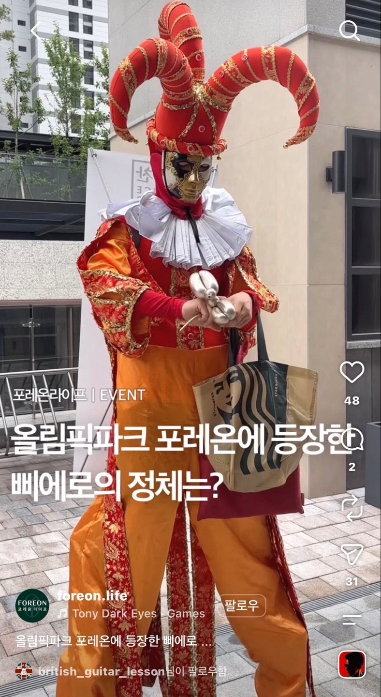
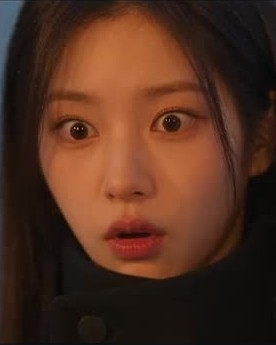
약 6개월간 주요 마케팅 매체의 콘텐츠를 전수 분석해 트렌드·밈 키워드를 추출했습니다. 이 중 주요 후보 키워드는 인스타그램 · X · 유튜브에서 실제로 퍼지고 있는지 확인하며, 어떤 콘텐츠가 어떻게 확산되는지 분석했습니다.
월별 분포 04월 58 · 05월 39 · 06월 59 · 07월 57 · 08월 55 · 09월 54 · 10월 12 | 기사 본문에서 트렌드 용어·소비자 동작·발화·포맷·발화점을 구조화 추출한 뒤 빈도와 관측 월 수를 집계했습니다. 아래 플랫폼·포맷 숫자는 기사 본문에 기록된 언급 횟수입니다. 매체 목록은 부록 근거대장에 있습니다.
※ 국내 마케팅 매체의 보도 기준이며 소비자 패널 조사나 연령 분리 데이터는 아닙니다. “2030이 이렇게 반응했다”가 아니라 “국내 2030 대상 콘텐츠 트렌드가 이렇게 움직였다”로 읽습니다.
334건에서 관측한 여섯 가지와, 이번 캠페인에 적용할 해석.
여섯 가지 발견의 근거 수치.
| 관측 월 수 | 용어 수 | 비중 | 대표 |
|---|---|---|---|
| 1개월 | 2,545 | 95.10% | — |
| 2개월 | 94 | 3.51% | — |
| 3개월 | 22 | 0.82% | 거지맵 · 랜덤깡 · 백룸 · 볼꾸 |
| 4개월 | 8 | 0.30% | 제철코어 · 왁뿌볼 · 말랑이 · K힙 |
| 5개월 | 6 | 0.22% | 잼컨 · 텍스트힙 · 바이브 코딩 · 히퍼 |
| 7개월 | 1 | 0.04% | 감다살 (20개 기사) |
※ 기사에 한 달만 등장했다는 것이 실제 유행이 한 달 만에 끝났다는 뜻은 아닙니다. 10월은 관측 기간이 짧고, 매체의 편집 방향·동의어 처리도 등장 빈도에 영향을 줍니다.
용어 자체는 명사지만, 이 분석의 분류 기준으로 보면 네 축에는 공통적으로 소비자가 직접 하는 행동이 붙어 있었습니다. 반대로 한 달만 관측된 용어는 대부분 새 물건·새 호칭·새 장소였습니다.
※ 7개월 전 기간에 관측된 유일한 용어 감다살(감각 다 살아있네)은 축이 아니라 평가어입니다. 기획이 좋을 때 소비자가 브랜드에 붙여주는 칭찬이고, 20개 기사에 걸쳐 반복 등장했습니다.
기사에 서술된 소비자 행동 중 1위는 ‘댓글 달기’(177회)였습니다. 언급 빈도라 참여율이나 사람 수를 뜻하지는 않지만, 소비자가 원본에 자기 말을 덧붙이는 사례가 반복적으로 소개됐습니다.
기사에서는 브랜드가 ‘빙의’·‘회귀’ 같은 로판 설정에 제품을 녹이는 방식도 함께 소개됐습니다. 댓글이 원본에 말을 더하는 동작이라면, 회차형 이야기는 그 댓글이 다음 화까지 이어지게 만드는 구조입니다. 자사 TWS 숏폼 드라마도 회차형으로 운영된 경험이 있습니다.
기사 속 포맷 언급 2위가 ‘캡처 이미지’(212건)입니다. 소비자가 자기 맥락에 맞는 한 장면을 잘라 쓰는 사례가 많이 소개됐고, 2분할 구도(84건)처럼 한 장 안에서 비교가 끝나는 형식도 자주 등장했습니다. 캡처를 확산을 고려할 제작 단위로 봅니다.
| 사례 | 기사 속 규모 | 참여 방식 |
|---|---|---|
| 펄러비즈 | 해시태그 316억 | 만들기 + 결과물 인증 |
| STORM II 군무 밈 | 1.8억 | 따라하기 가능한 동작 |
| 공동 생일파티 케이크 | 1.7억 | 여럿이 모여야 성립 |
| 말랑이 | 7,662만 | 촉감 + ASMR |
| GOGUMA | 7,540만 | 반복 가능한 포맷 |
| 바이브 코딩 | 5,300만 | 직접 결과물 생성 |
| 이미지 튀김 | 4,514만 | 누구나 재생산 가능 |
규모는 해시태그 누적·단일 영상 등 기준이 달라 순위로 비교하지 않습니다. 공통으로 보이는 것은 소비자가 큰 시간·기술 부담 없이 자기 버전을 만들 수 있는 구조였습니다. 완성도와 함께 이 여지를 설계에 넣습니다.
일본·중국에서 먼저 화제가 된 포맷이 시차를 두고 국내로 들어옵니다. 샤오홍슈·도우인 언급이 36건 확인됐습니다. 브랜드는 기존 문법을 빠르게 재해석하거나, 자사 워터밤·경쟁사 사건화 사례처럼 새로운 참여 계기를 직접 만들 수 있습니다.
인용 발화 중 ‘기획 칭찬’(40건)이 ‘구매 의향’(15건)보다 많았습니다. 기사에 인용된 일부 반응이라 전체 소비자의 판단 순서로 일반화하지는 않지만, 기사 [137]의 리바이스 사례처럼 기획 감각이 브랜드 인상을 바꾼 사례가 소개됐습니다.
반복 관측된 아쉬움 “또 키링인가?”는 품질 불만이 아니라 기시감에 대한 피로에 가깝습니다. 시즌 굿즈를 만들 때는 제품과 연결되는 이유를 함께 설계합니다.
팝업 이후의 역할, 그리고 밈을 언제 어떻게 고를 것인가.
11월 7–9일에는 카리나와 커브패딩을 활용한 윈터시티 팝업이 열립니다. 팝업은 세계관 · 단서·미션·게임 · 패딩 DP와 포토존을 담당합니다. 11/15 이후는 팝업의 게임을 반복하지 않고, 일상 속에서 커브패딩을 고르고 · 입고 · 찍는 장면으로 이어갑니다.
| 구분 | 11/7–9 윈터시티 | 11/15 이후 |
|---|---|---|
| 주요 과제 | 주목·세계관·체험 | 제품 구별·실제 착장·선택 이유 |
| 소비자 질문 | 무슨 일이 일어나고 있나 | 나에게 맞는 커브는 무엇인가 |
| 표현 | 얼음 도시·구출·게임 | 일상·착장 전환·실루엣 비교 |
| 카리나 | 팝업 서사의 중심 | 팝업에서 실제 스타일로 넘어가는 브리지 |
추출 용어의 95.1%는 한 달의 기사에서만 관측됐습니다. 그래서 밈 단어 하나에 캠페인을 걸지 않고, 브랜드 이름 · 제품 · 소비자 동작과 묶어 씁니다. 밈이 식어도 남는 것이 캠페인의 중심이고, 밈은 사람을 불러오는 입구입니다. 밈을 쓰는 안은 집행 7–10일 전 아래 게이트로 온도를 확인합니다.
발견 2에서 3개월 이상 관측된 트렌드는 네 축(촉감 · 참여 · 불안관리 · 기록)에 걸려 있었습니다. 집행 직전 후보를 고를 때 이 네 축 중 하나에 해당하는지를 먼저 봅니다. 해당하지 않는 단발 유행어는 게이트 1번에서 대부분 탈락합니다.
다음으로 소비자가 콘텐츠를 어떻게 받아들이고 표현하는지 봤습니다. 약 6개월간 주요 마케팅 매체 아티클 334건을 전수 분석해 키워드 2,676개를 추출하고, 주요 후보는 인스타그램·X·유튜브에서 실제 확산 여부를 확인했습니다.
추출 용어의 95.1%는 한 달의 기사에서만 관측됐습니다. 밈 단어는 빠르게 바뀝니다. 반면 3개월 넘게 이어진 37개에는 고르고, 만들고, 찍고, 기록하는 것처럼 소비자가 직접 하는 행동이 있었습니다.
기사 속 소비자 동작 1위는 ‘댓글 달기’, 포맷 2위는 ‘캡처 이미지’였습니다. 소비자는 보는 데서 나아가 말을 덧붙이고, 한 장면을 잘라 자기 방식으로 씁니다. 최근에는 AI 로판 드라마처럼 이야기를 회차로 나눠, 다음 화를 기다리며 댓글을 남기게 하는 포맷이 9월 이후 연이어 다뤄졌습니다.
그래서 커브패딩 콘텐츠도 보는 재미 위에 고르고·남기고·공유할 자리를 더합니다.
그래서 밈은 단어 하나에 거는 대신 브랜드 이름·제품·동작과 묶어 씁니다. 밈은 사람을 불러오는 입구이고, 캠페인의 중심은 밈이 식어도 남는 포맷입니다.
자사 · 경쟁사 · 트렌드 분석에서 얻은 단서를 네 가지 설계 원리로 정리하고, 그 원리로 MLB와 패딩에 녹일 트렌드 · 밈 4가지를 특정했습니다.
그래서 저희는 커브패딩 캠페인을
네 가지 설계 원리로 만들기로 했습니다.
① 빈칸 — 소비자가 말·취향·해석을 더할 여지 · ② 역할 — 관심을 끄는 편과 제품을 보여주는 편을 나누기 · ③ 재생산 — 전달·캡처·재해석으로 이어질 결과물 · ④ 실물 — 실제 커브를 알아보고 확인할 연결. 성공 공식이 아니라 설계 기준이며, CH.5의 네 아이디어는 이 원리를 서로 다른 소비자 경험으로 풀었습니다. 이 원리로 CH.3의 트렌드 · 밈 가운데 MLB에 녹일 4가지를 골랐습니다(아래 선정표).
자사·경쟁사·트렌드의 관찰을 같은 행에 놓고, 이번 과제에 적용할 원리로 정리했습니다. 각 칸은 관찰이고, 오른쪽 열은 저희의 판단입니다.
| CH.1 자사 | CH.2 경쟁사 | CH.3 국내 2030 | → 설계 원리 |
|---|---|---|---|
| TWS 제목이 빈칸 포맷이 되자 댓글에서 변형이 돌았다 | 설명형 티저 댓글 0 vs 질문형 2,078 반복 티저 0.93% vs 퀴즈 41.79% |
기사 속 소비자 동작 언급 1위 ‘댓글 달기’(177회) | ① 빈칸 — 소비자가 말·취향을 더할 여지를 남긴다 |
| TWS EP.1 좋아요 최고 · EP.3 제품 관련 댓글 비중 최고 (56K/1.7% → 14K/9.2%) |
코스토니 FULL 본편 반응이 가장 컸고 · 반전편 공유율이 더 높았음 (5.78% vs 2.75%) |
회차형 AI 로판 드라마 — 나눠 공개하면 다음 화를 기다리는 댓글이 생긴다 · 확산 5단계마다 하는 일이 다르다 | ② 역할 — 관심을 끄는 편과 제품을 보여주는 편을 나눈다 |
| 워터밤 오가닉 1,200건은 6만 명이 찍어 올린 것 성공 요인 1번 = 찍히는 자리를 미리 설계 |
무신사 — 라이트·헤비를 나란히 세워 직접 입어보게 | 대형 확산 사례 = 참여 부담이 낮은 구조 포맷 언급 2위 캡처(212) |
③ 재생산 — 전달·캡처·따라 하기 쉬운 결과물을 만든다 |
| TWS — 제품이 결론에 가까운 EP.3에서 제품 대화 비중 최고(9.2%) | 코스토니 리버시블은 실물 기능 → 댓글에 제품을 설명 헬리녹스 스펙 언급은 3%에 그침 |
3개월 이상 관측된 37개에 ‘하는 것’이 있었다 | ④ 실물 — 커브를 알아보고 확인할 연결을 둔다 |
성공을 보장하는 조건이 아니라, 아이디어를 설계하고 비교하는 기준입니다.
| 원리 | 발표에서 쓰는 의미 | 아이디어에 던질 질문 |
|---|---|---|
| ① 빈칸 | 소비자가 자기 말 · 취향 · 해석을 더할 여지 | 소비자는 무엇을 고르고, 무엇을 말하고 싶어지는가? |
| ② 역할 | 관심을 끄는 콘텐츠와 제품을 보여주는 콘텐츠, 공식 계정 · 크리에이터 · 소비자 접점의 역할 구분 | 관심이 생긴 사람이 다음에 어디서 무엇을 보는가? |
| ③ 재생산 | 전달 · 캡처 · 재해석으로 이어질 수 있는 결과물 | 큰 부담 없이 참여하거나 잘라 쓸 결과물이 있는가? |
| ④ 실물 | 실제 커브 제품을 알아보고 확인할 수 있는 연결 | 콘텐츠를 본 뒤 어떤 커브의 모습이 남는가? |
같은 날, 같은 계정, 같은 제품인데 반응이 크게 달랐습니다. 참여를 요청한 질문형 게시물에 댓글이 몰렸습니다.
자사에도 기록이 있습니다. 「MLB 모자를 썼더니 ［ ］이 되었다」가 빈칸으로 읽히자 댓글에서 변형이 돌기 시작했습니다 — “나도 MLB모자쓰고 본부장돼야지”. 트렌드 기사에서도 소비자 동작 언급 1위가 ‘댓글 달기’(177회)였습니다. 완성된 설명만 두기보다, 소비자가 말을 더할 자리를 함께 둡니다.
TWS 숏폼 드라마 3화를 나란히 놓으면 두 지표의 정점이 다른 편에 있습니다.
좋아요는 EP.1이 가장 컸고, 수집 댓글 중 제품 관련 비중은 1.7% → 9.2%로 늘었습니다(EP.3 7/76건). 제품이 결론에 가까운 편에서 제품 대화가 가장 많이 관측됐습니다. 코스토니도 FULL 본편의 반응이 가장 컸지만, 반전이 드러난 EP.2의 공유율이 더 높았습니다(5.78% vs 2.75%).
트렌드 기사에 소개된 대형 확산 사례는 소비자가 큰 시간·기술 부담 없이 자기 버전을 만들 수 있는 구조였습니다.
자사 대표 캠페인도 같은 구조였습니다. 워터밤 오가닉 1,200건은 브랜드가 만든 게 아니라 현장 6만 명이 찍어 올린 것이고, 보고서가 꼽은 성공 요인 1번은 “로고가 정면에 오는 커스텀 착장 → 직캠 앵글마다 MLB 노출”이었습니다. 찍히는 자리를 미리 설계한 것입니다.
| 제품의 역할 | 소비자가 한 말 | |
|---|---|---|
| 코스토니 리버시블 | 실물 기능 — 뒤집어 입을 수 있어야 장면이 성립 제품이 없으면 이야기가 무너진다 | 댓글에 “(리버시블)”이라고 괄호 치고 제품을 설명 |
| 무신사 라이트/헤비 | 실물 비교 — 나란히 놓고 직접 입어본다 | “무엇이 인기인가”가 아니라 “내게 뭐가 맞나” |
헬리녹스는 320g·800FP를 캡션에서 반복했고, 소비자 태그 29건(소표본)에서는 스펙보다 디자인·공간 경험 언급이 많았습니다. 수치를 말하는 것과 함께, 눈으로 확인할 수 있는 장면을 둡니다.
3개월 이상 이어진 트렌드의 네 축에 커브패딩을 대보고, 이번 안에서 우선 검토할 자리를 골랐습니다.
| 트렌드 축 | 대표 용어 | 이번 안 | 판단 |
|---|---|---|---|
| ① 손으로 만지는 것 | 말랑이 · 스퀴시 · 왁뿌볼 · 볼꾸 | 보조 | 아우터 자체는 만지작거리는 대상과 거리가 있다. 다만 표면(글로시·실키)은 만질 거리가 될 수 있다 |
| ② 참여해서 만드는 것 | 랜덤깡 · 가챠 · 필 오프 · 걸스나잇 | 우선 | 네 제품 중 고르는 행위 자체가 참여가 된다. 결과가 사람마다 다르고, 그 결과가 곧 인증샷이다 |
| ③ 불안을 관리하는 것 | 럭키맥싱 · 오하아사 · 리커버리노믹스 | 보조 | 패딩은 운세·건강·회복 카테고리와 거리가 있다. 억지로 붙이면 기시감이 먼저 온다 |
| ④ 취향을 기록하는 것 | 셋로그 · 텍스트힙 · 제철코어 · 아트맥싱 | 우선 | 착장은 원래 기록의 대상이다. 겨울 일정별로 쌓이고, 쌓인 것이 다음 사람의 참고가 된다 |
단발 이벤트가 아니라,
고르고 · 보여주고 · 쌓이는 반복 포맷
보는 재미 위에 참여와 기록의 자리를 더합니다. 소비자가 고를 거리·말할 거리가 있으면 빈칸이 생기고(원리 1), 제품을 보여주는 편이 따로 있으면 관심이 제품으로 이어지고(원리 2), 같은 구도로 반복되면 따라 찍기 쉬우며(원리 3), 네 제품의 실물 차이가 기억의 근거가 됩니다(원리 4).
모든 안이 같은 놀이를 할 필요는 없습니다. 아래 질문으로 각 안을 점검하고, 강점은 안마다 다르게 둡니다.
윈터시티 팝업(11/7–9)이 세계관·미션·체험을 담당하므로, 팝업과 비교해 새로 더하는 경험이 있는지도 함께 봅니다. 네 아이디어가 각 원리를 어떻게 담았는지와 보완할 연결은 CH.5 상단 대조표에 정리했습니다.
CH.3에서 관찰한 트렌드 · 밈 가운데, 네 가지 설계 원리를 담을 수 있고 MLB 성인 톤과 커브패딩에 붙일 수 있는 것을 골랐습니다. 각 트렌드가 CH.5의 아이디어 하나로 이어집니다.
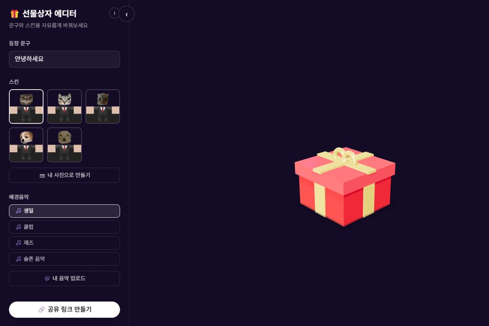
링크를 열면 메시지가 튀어나오는 웹. 카톡 답장 대신 링크를 보내며 놀이처럼 마음을 전한다
빈칸(내 메시지) · 재생산(링크 전달). 연말 메시지 시즌과 맞고, 고르는 대상을 커브패딩 디자인으로 바꿀 수 있다
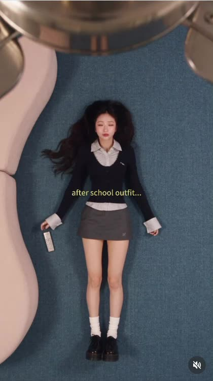
실링팬이 돌 때마다 착장이 바뀌는 AI 릴스. 공개된 프롬프트로 각자 따라 만든다
재생산(프롬프트) · 실물(패딩만 실사로 고정). 한 벌로 여러 겨울 착장을 보여줄 수 있다
회차로 연재되는 AI 로맨스판타지 드라마. 다음 화를 기다리며 댓글로 감상과 전개를 나눈다
역할(회차별로 관심 → 제품) · 빈칸(다음 화 전개). 이야기 속 설정에 커브패딩을 장치로 넣고, TWS 숏폼 드라마의 회차형 경험을 이어간다
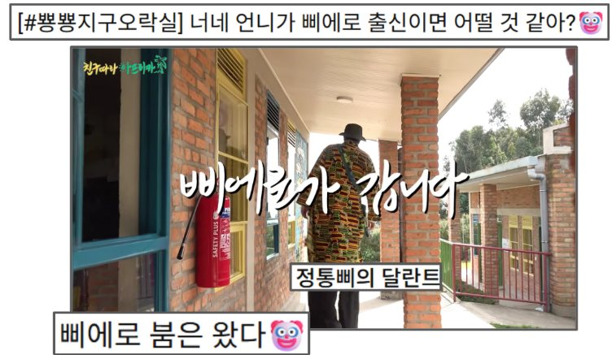
아무 단어 뒤에 ‘삐’를 붙여 부르는 호칭 변형. 만나면 찍어 올리는 삐에로 콘텐츠
빈칸(호칭 변형) · 재생산(찍어 올리기). ‘엠엘비 → 엠엘삐’로 밈을 브랜드 이름에 붙인다
밈 단어 자체는 빠르게 식을 수 있어, 중심은 브랜드 이름과 커브를 입은 퍼포머에 두고 집행 전 게이트로 온도를 다시 확인한다
세 가지 분석에서 얻은 단서를 커브패딩에 적용할 네 가지 설계 원리로 정리했습니다.
첫째, 빈칸입니다. 소비자가 자기 말·취향·해석을 더할 여지를 남깁니다. 화이트라벨은 같은 날 같은 제품으로 올린 설명형 두 건은 댓글이 0, 질문형 게시물은 2,078이었습니다. 내셔널지오도 같은 캠페인 안에서 퀴즈형 댓글률이 41.79%까지 관측됐습니다.
둘째, 역할입니다. 저희 TWS 숏폼 드라마에서 좋아요는 EP.1이 가장 컸고, 제품이 결론에 가까운 EP.3에서 제품 관련 댓글 비중이 가장 높았습니다. 최근 트렌드 기사에서 연이어 다룬 AI 로판 드라마도 이야기를 회차로 나눠 다음 화를 기다리게 합니다. 그래서 관심을 끄는 편과 제품을 보여주는 편의 역할을 처음부터 나눠 설계합니다.
셋째, 재생산입니다. 트렌드 기사 속 대형 확산 사례는 큰 부담 없이 자기 버전을 만들 수 있는 구조였고, 워터밤 오가닉 1,200건도 현장의 6만 명이 직접 찍어 올린 것입니다. 보고서가 꼽은 1번 성공 요인이 ‘로고가 정면에 오는 커스텀 착장’이었는데, 찍히는 자리를 미리 설계했다는 뜻입니다.
넷째, 실물입니다. 코스토니는 뒤집어 입는 기능이 장면이 되자 댓글에서 소비자가 직접 제품을 설명했습니다. 커브패딩도 콘텐츠를 본 뒤 어떤 커브의 모습이 남는지를 먼저 정합니다.
모든 아이디어가 같은 놀이를 할 필요는 없습니다. 다만 콘텐츠를 즐기는 과정에서 커브를 알아보고, 관심이 생기면 제품을 더 확인할 수 있도록 이 연결은 모두 갖추도록 했습니다.
그리고 이 원리로 2030 트렌드·밈 가운데 MLB와 패딩에 녹일 네 가지를 골랐습니다. 메시지 웹, 탑다운 AI 아웃핏 전환, AI 로판 드라마, 삐에로 밈입니다. 이 네 가지가 각각 아이디어 하나로 이어집니다.
CH.4에서 특정한 트렌드 · 밈 4가지를 커브패딩과 결합한 아이디어입니다. 같은 설계 원리를 서로 다른 소비자 경험(메시지 · 스타일링 · 이야기 · 현장)으로 풀었습니다. 아이디어마다 컨셉 → 레퍼런스 → 어떻게 나왔나 → 왜 해야 하나 → 실행 단계별 버즈 포인트 → 기대효과 순서로 정리했고, 팀 리뷰 후 하나를 골라 구체화합니다.
네 안은 같은 원리를 서로 다른 소비자 경험으로 풀었습니다. 각 안이 어떤 장치로 원리를 담았는지, 아직 보완할 연결은 무엇인지 한 장에 봅니다.
| 중심 경험 · 강점 | ① 빈칸 | ② 역할 | ③ 재생산 | ④ 실물 | 보완할 연결 | |
|---|---|---|---|---|---|---|
| A 커브 오너먼트 트리 | 관계형 참여 메시지 · 답장 | 오너먼트를 고르고 편지를 채운다 | 9그리드(관심) → 사이트(참여) → 트리 현황(재방문) | 편지 링크가 친구에게 이어진다 | 히어로 제품 디자인의 오너먼트 | 선택 화면에 실제 제품 컷 · 제품명을 함께 둔다. 선택 분포는 참여자 안의 선호로만 해석 |
| B AI 커브 스타일링 | 스타일 전달 한 벌로 여러 겨울 착장 | 스타일링 투표 · 다음 코디 리퀘스트 | 공식 시드(관심) → 크루(확산) → DM(상품 정보) | 감상 · 저장 · 투표가 기본, 프롬프트로 따라 만들기는 선택 | 패딩만 실사 고정 → 실루엣 | 탑다운 앵글은 볼륨이 왜곡될 수 있어 마지막에 정면 · 측면 실착 컷을 붙인다 |
| C AI 로판 숏드라마 | 연속 감상 다음 화를 기다리는 이야기 | 질문형 티저 · 다음 화 선택 | EP.1(관심) → 회차별 제품 카드 → 최종화 | 장면 캡처 · 감상 댓글 | USP ‘가볍고 편하게 움직이는’을 장면으로 | 매 회차 커브 식별 장면을 남긴다. 협업 채널 배포와 소비자 캡처는 구분해 측정 |
| D 엠엘삐 | 현장 촬영 거리에서 마주치는 순간 | “오늘은 어디?” 출몰 힌트 | 구인공고(관심) → 출몰(현장) → 연재(제품 소개) | 만나면 찍고 공유한다 | 커브를 입은 퍼포머가 중심 | 풍선등은 보조 소품 — 실물 목업으로 연결 확인. 배포로 생긴 게시물과 자발적 목격은 구분 |
연말마다 MZ 사이에서 유행하는 ‘어드벤트 캘린더 마이크로사이트’를 트리와 커브패딩으로 바꾼 캠페인 — 커브패딩 오너먼트에 연말 편지를 담아 함께 트리를 꾸밉니다.
매년 연말 유행하는 어드벤트 캘린더 마이크로사이트를, 트리 모양으로 · 커브패딩으로 바꿉니다.
| 어드벤트 캘린더 마이크로사이트 | 커브 오너먼트 트리 |
|---|---|
| 내 공간 — 호텔 · 집 · 달력 | 트리 — 오너먼트가 걸릴수록 채워지는 커브 트리 |
| 하나하나의 칸 — 방 · 창문 · 날짜 | 커브패딩 오너먼트 — 취향대로 고르는 히어로 제품 (설명란 = 제품 특장점) |
| 편지를 넣는 방식 — 봉투 · 카드 | 지퍼를 열고 편지를 담아 잠그기 — 패딩의 실제 디테일이 봉인이 됨 |
| 크리스마스까지 쌓아 가기 | 11/15부터 12/25까지 트리를 채우고, 크리스마스에 완성 |
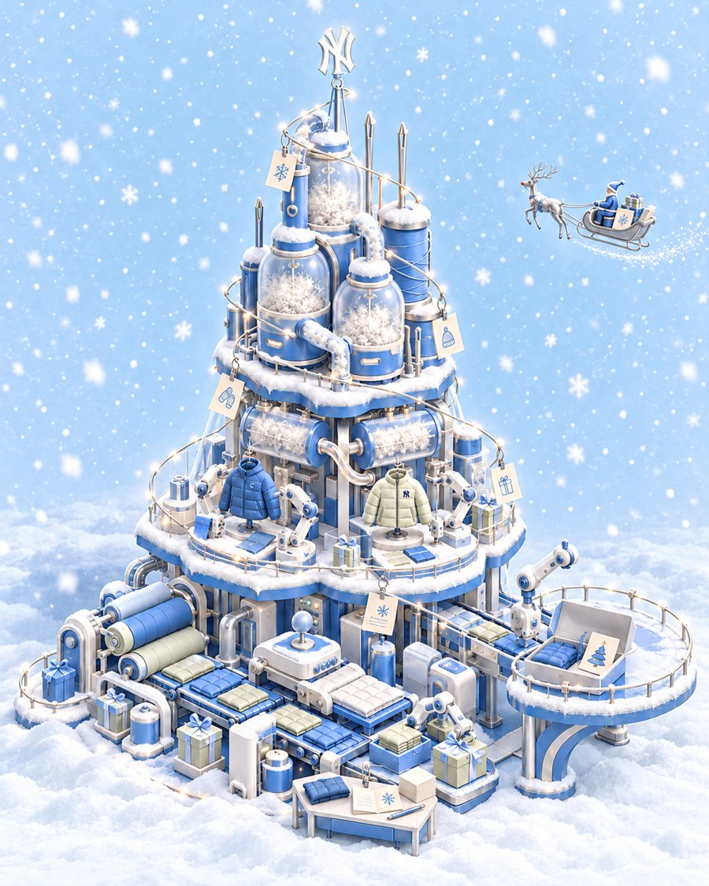
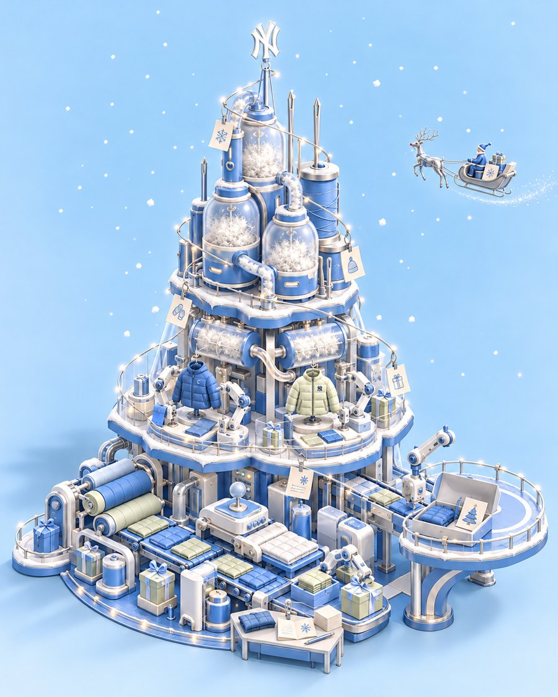
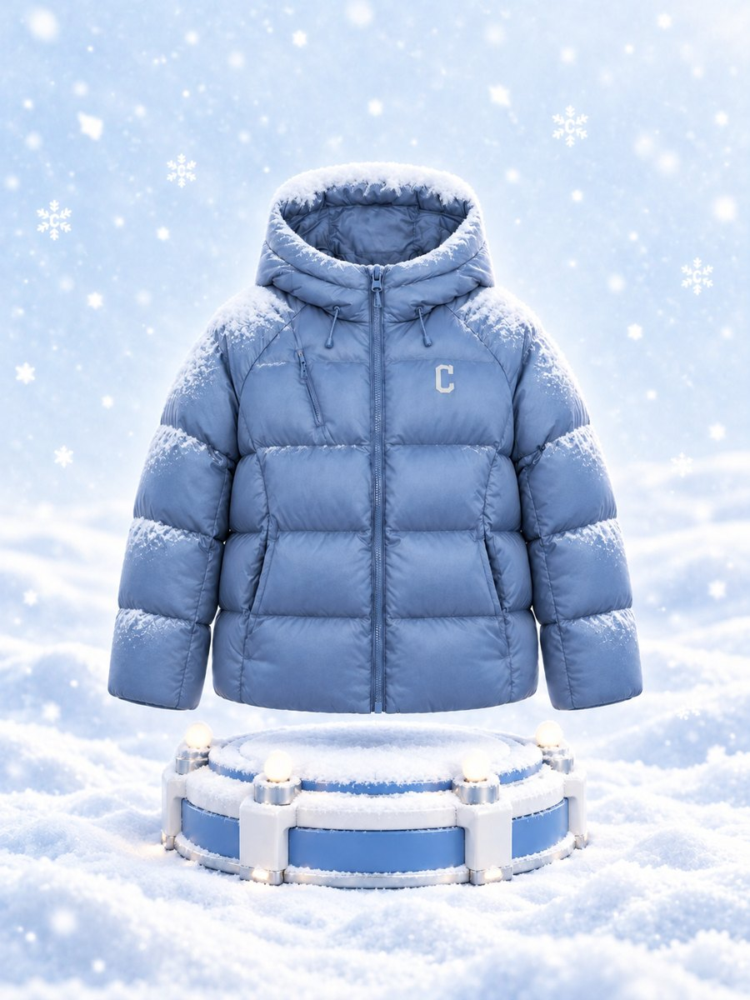
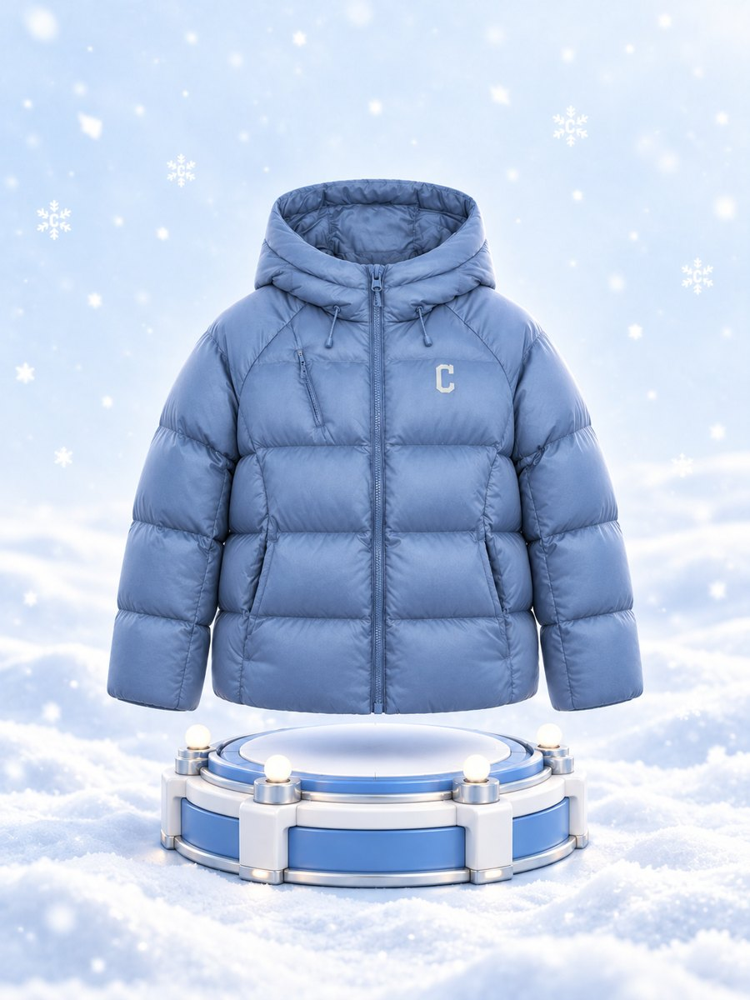
연말마다 유행하는 어드벤트 캘린더형 마이크로사이트, 메시지를 담아 보내는 웹사이트, 그리고 피드와 참여 방법을 하나의 이야기로 보여준 브랜드 사례입니다.
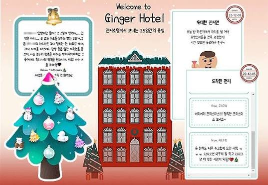
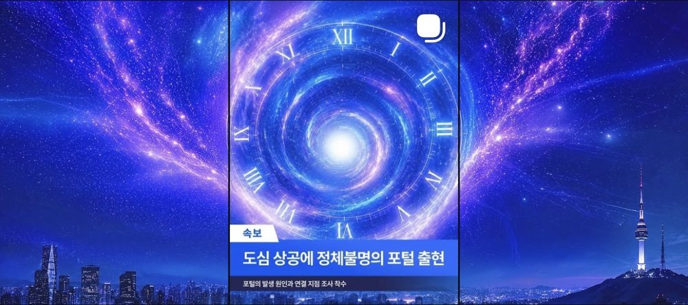
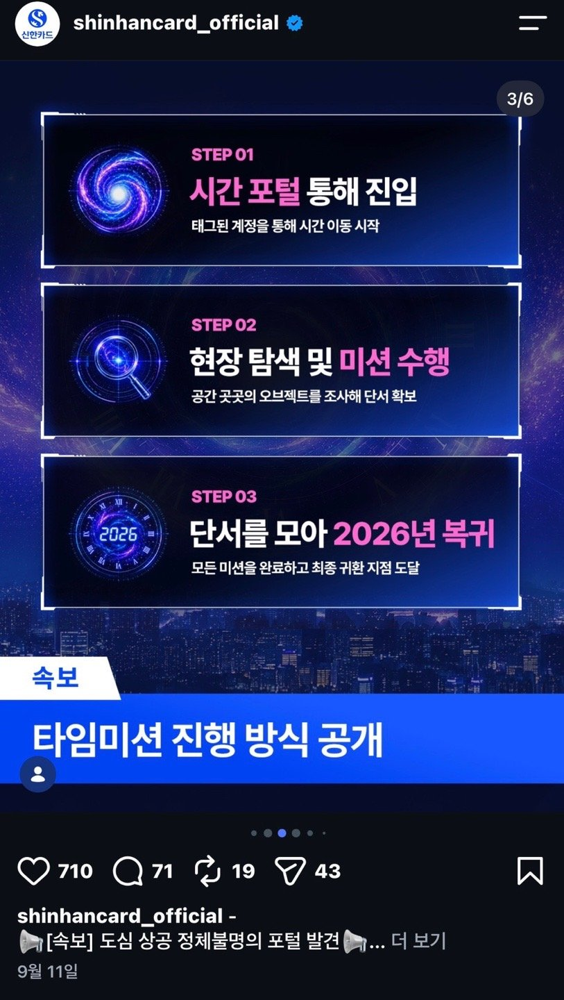
| 레퍼런스 | 오너먼트 트리 적용 |
|---|---|
| 25일간 채워지는 내 공간 A-1 | 호텔 대신 트리 — 11/15부터 12/25까지 오너먼트가 걸리며 채워지는 커브 트리 |
| 고르고 → 링크 만들기 A-2 | 오너먼트(= 커브패딩) 고르기 → 지퍼 열고 편지 쓰기 → 지퍼 잠그기 → 공유 링크 |
| 누르면 열리는 메시지 A-3 | 받은 사람이 오너먼트를 누르면 지퍼가 열리며 편지가 나오고, 답장 오너먼트를 고르러 들어옴 |
| 이어지는 피드 A-4 | 9그리드 — 트리 1(KV) + 오너먼트 8(OR)이 이어져 피드 전체가 하나의 트리 |
| 참여 방법 스텝 카드 A-5 | “고르기 → 편지 담기 → 트리에 걸기” 3단계 안내 카드 |
버즈 플랜 분석에서 “패딩을 고를 이유”가 비어 있다는 점에서 출발했습니다.
단계마다 맡은 역할이 다릅니다. 한 단계가 도달·참여·전환을 모두 맡지 않게 나눴습니다.
실링팬이 돌 때마다 코디가 바뀌는 ‘탑다운 아웃핏’ AI 스타일링 포맷으로, 프프크루와 마이크로 인플루언서가 커브패딩의 다양한 스타일링과 힙한 연출법을 보여주는 캠페인
천장의 실링팬이 한 바퀴 돌 때마다 코디가 바뀌고, 커브패딩만 그대로 남는다.
실제 인플루언서들이 만든, 최근 바이럴되고 있는 AI 스타일링 콘텐츠입니다. 셋 다 같은 문법을 씁니다 — 천장에서 내려다본 고정 카메라, 바닥에 누운 인물, 그리고 화면 위를 지나가는 실링팬 날개.
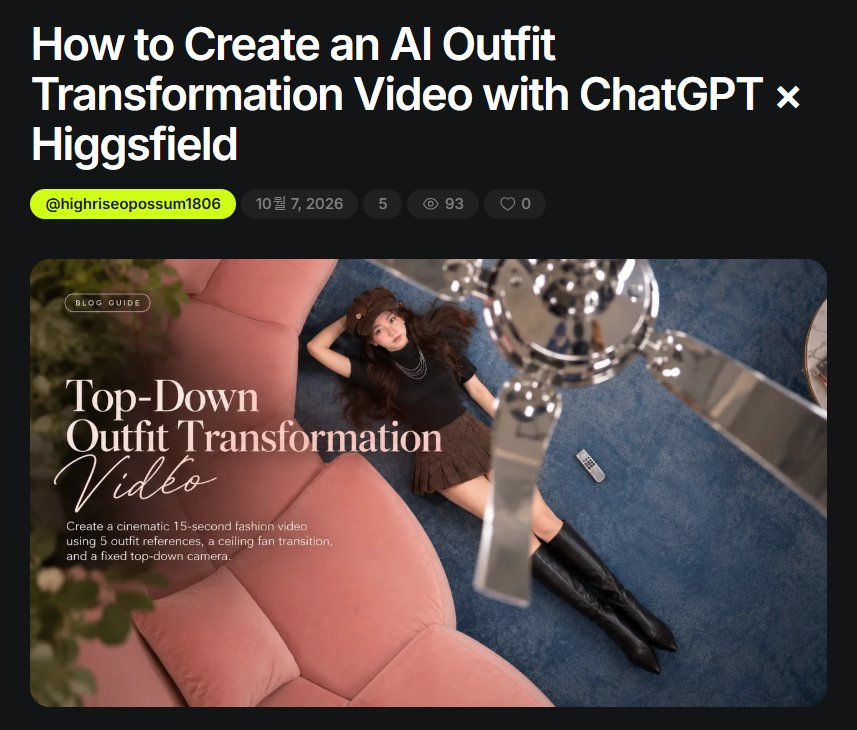
「How to Create an AI Outfit Transformation Video with ChatGPT × Higgsfield」 — 착장 레퍼런스 5장 + 실링팬 전환 + 고정 탑다운 카메라로 15초짜리 시네마틱 패션 영상을 만드는 법을 정리한 프롬프트 가이드 페이지입니다.
제작 레시피가 공개돼 있다는 건, 크루와 소비자가 같은 방식으로 바로 따라 만들 수 있다는 뜻입니다. CH.4의 “잘 만든 것보다 따라 하기 쉬운 것이 퍼진다”와 정확히 맞는 포맷입니다.
| 원본 포맷 | 커브 스타일링 적용 |
|---|---|
| 고정 탑다운 카메라 | 위에서 내려다보면 패딩의 볼륨과 곡선이 그대로 드러납니다 → USP ‘입체적인 실루엣’이 설명 없이 보이는 앵글 |
| 팬 날개 와이프 | 날개가 지날 때마다 이너 · 하의 · 신발 · 액세서리가 바뀌고 커브패딩은 그대로 — 한 벌로 여러 무드 |
| 리모컨 = 전환 신호 | 제안 — 리모컨 대신 후드를 쓰거나 지퍼를 올리는 동작을 전환 신호로. 전환 순간마다 패딩 디테일이 클로즈업됩니다 |
| 4–6벌 · 15초 | 크루 편: 커브 1종 고정 × 코디 5벌 / 공식 첫 편: 날개가 지날 때마다 히어로 4종이 차례로 바뀌는 ‘커브 4종 편’ |
| 루프 | 마지막 컷이 첫 커브로 돌아와 반복 재생 → 네 커브를 여러 번 보게 됨 |
| 공개된 레시피 | MLB도 프롬프트를 공유하되, 커브패딩은 실제 제품컷을 레퍼런스 이미지로 넣어 디테일을 유지 |
지금 번지는 포맷을, MLB가 이미 한 번 성공한 방식(트렌드 × 인플루언서 AI 콘텐츠)으로 받아냅니다.
공식 계정이 포맷을 깔고, 크루가 넓히고, 소비자가 참여하고, DM이 구매로 잇습니다.
2030이 즐겨 보는 AI 로맨스판타지(로판) 숏폼 드라마 안에서 커브패딩이 이야기를 움직이게 만드는 콘텐츠. MLB 자체제작과 AI 숏폼 채널 협업, 두 트랙으로 진행합니다.
커브패딩이 배경 소품이 아니라, 이야기를 움직이는 장치가 된다.
‘AI 콘텐츠’로 표기된 채 연재되고 있는 숏폼 드라마 채널들입니다. 판타지보다 연애·가족·회사 같은 현대 일상 소재가 많고, 계정마다 고정 캐릭터와 시리즈가 있습니다.
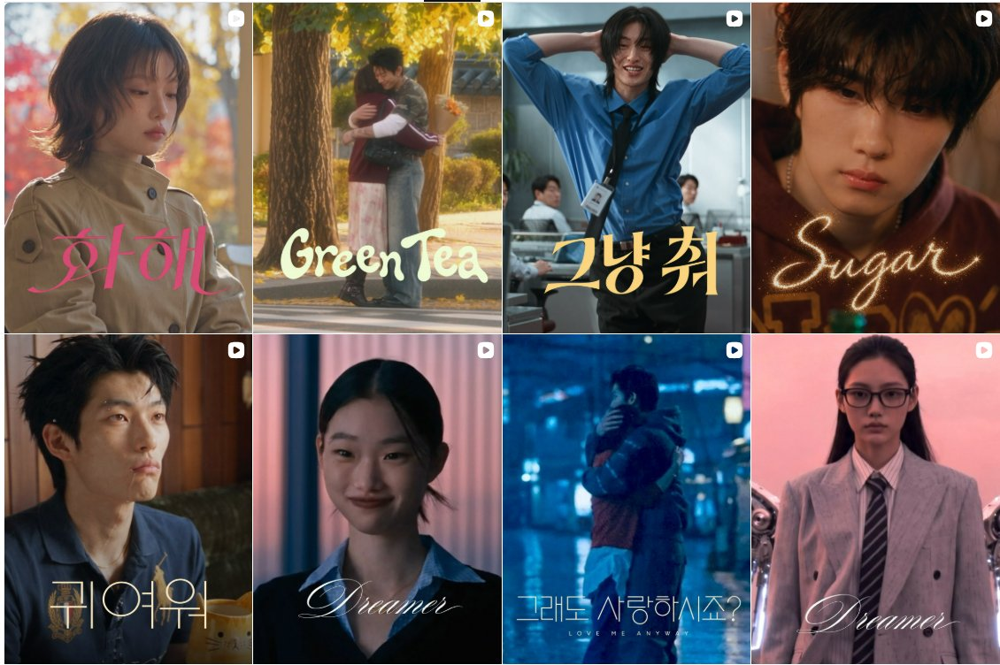
| 레퍼런스 포맷 | 커브패딩 적용 |
|---|---|
| 고정 캐릭터 = IP | 트랙 A — MLB 오리지널 캐릭터를 시즌 내내 고정 / 트랙 B — 협업 채널의 인기 캐릭터에게 커브패딩을 입힘 |
| 옷이 사건이 되는 회차 | 커브패딩이 그 회차의 갈등·해결의 중심이 되도록 — 예: 동생이 몰래 입고 나간 커브패딩 |
| 캡션 = 줄거리 | 회차 줄거리 + 등장한 커브 제품명 + USP ‘가볍고 편하게 움직이는 패딩’ 한 줄 |
| 의상 크레딧 | 캡션에 “Clothes: @MLB 공식 계정” + 공동작업자 게시로 두 계정에 동시 노출 (트랙 B) |
| 포스터형 타이틀 카드 | 회차마다 타이틀 카드를 붙여 MLB 피드에 ‘커브 시리즈’가 쌓이게 |
| 장르 | 트랙 A는 판타지 컨셉, 트랙 B는 협업 채널이 잘하는 현대 일상 로맨스·코미디를 그대로 따름 |
MLB가 이미 잘하는 ‘숏폼 드라마’ 엔진은 살리고, 지난번에 비어 있던 칸을 채우는 방법을 찾았습니다.
두 트랙으로 나눠 실행합니다. 트랙 A는 이야기와 제품 노출을 MLB가 전부 설계하고, 트랙 B는 이미 반응이 있는 채널에 올라탑니다.
회당 1–3분 릴스(유튜브는 합본). 첫 화는 멀리 보내고, 마지막 화에서 제품으로 회수합니다.
셀럽 PPL처럼 사람에게 옷을 입히는 대신, 드라마 속 캐릭터에게 입힙니다.
최근 떠오른 ‘삐에로 밈’을 활용해 MLB → 엠엘비 → 엠엘삐로 브랜드명을 하나의 밈으로 치환하고, ‘MLB의 삐에로’가 서울 곳곳에 나타나 커브패딩을 알리는 캠페인
커브패딩을 입은 ‘MLB의 삐에로’ 엠엘삐가 서울 곳곳에 나타나, 짧은 거리 퍼포먼스와 함께 커브패딩 모양 풍선등을 나눠준다.
다른 브랜드는 이름 뒤에 ‘삐’를 덧붙여야 하지만, MLB는 원래 ‘비’로 끝나 한 글자만 바꾸면 됩니다. 밈을 아는 사람은 바로 웃고, 모르는 사람에게도 ‘MLB의 삐에로’로 읽힙니다.
구인공고 · 삐에로 밈 · 찾기 · 게릴라 마케팅, 네 갈래로 모았습니다. 묶음마다 위 캠페인 흐름의 어느 단계에 쓰이는지 표시했습니다.
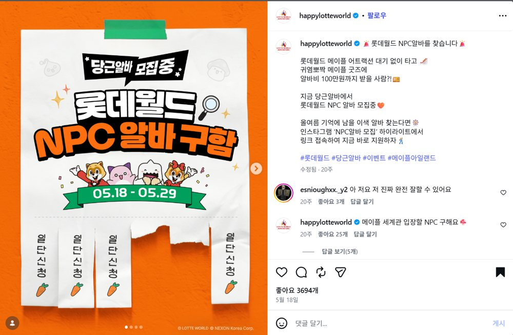
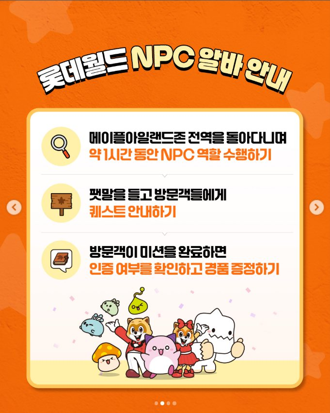
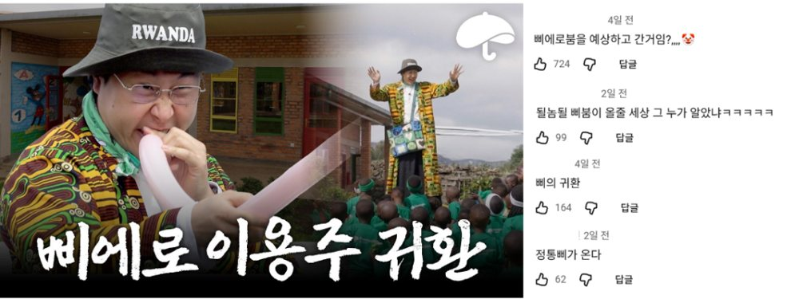
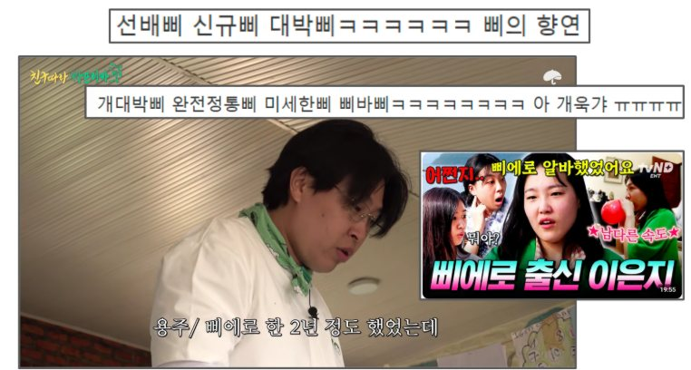
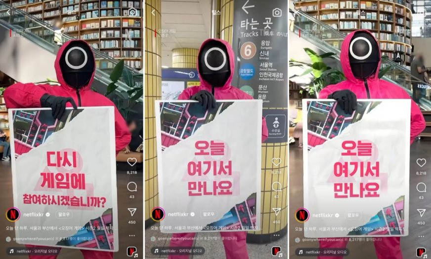
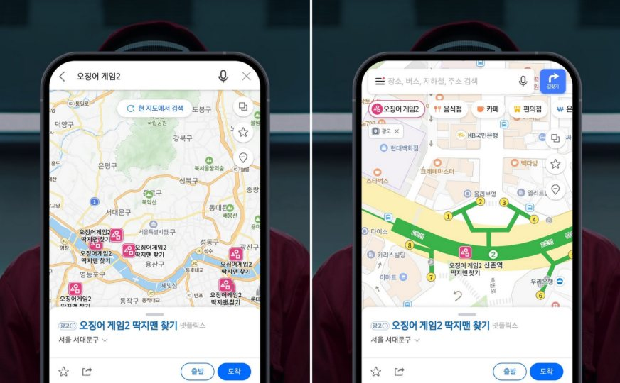
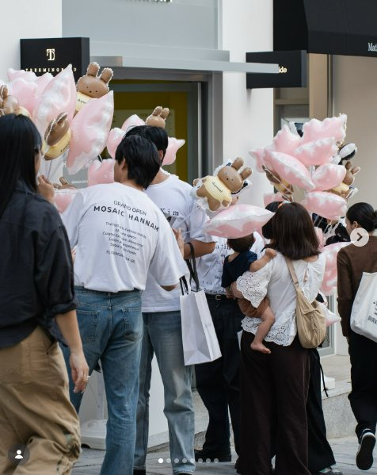
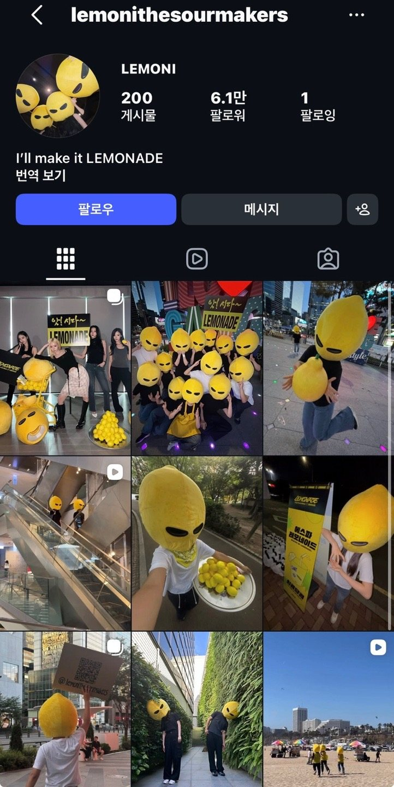
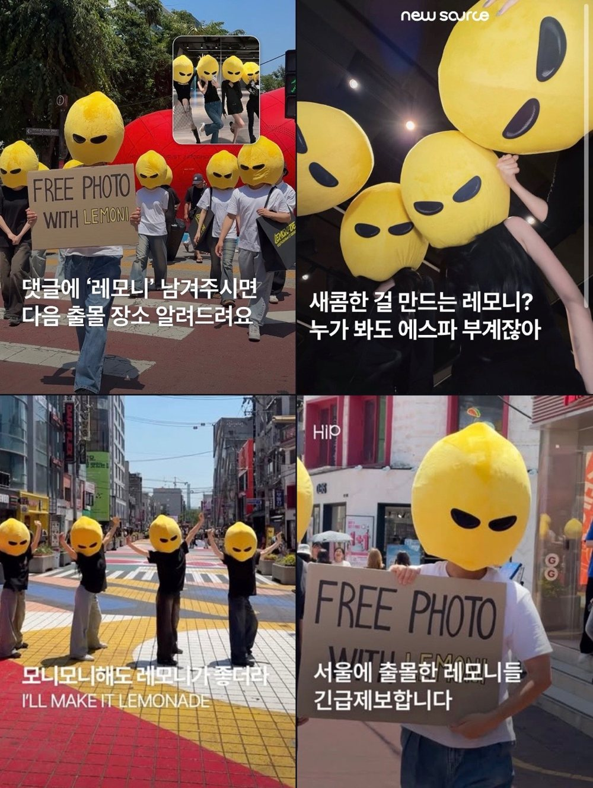
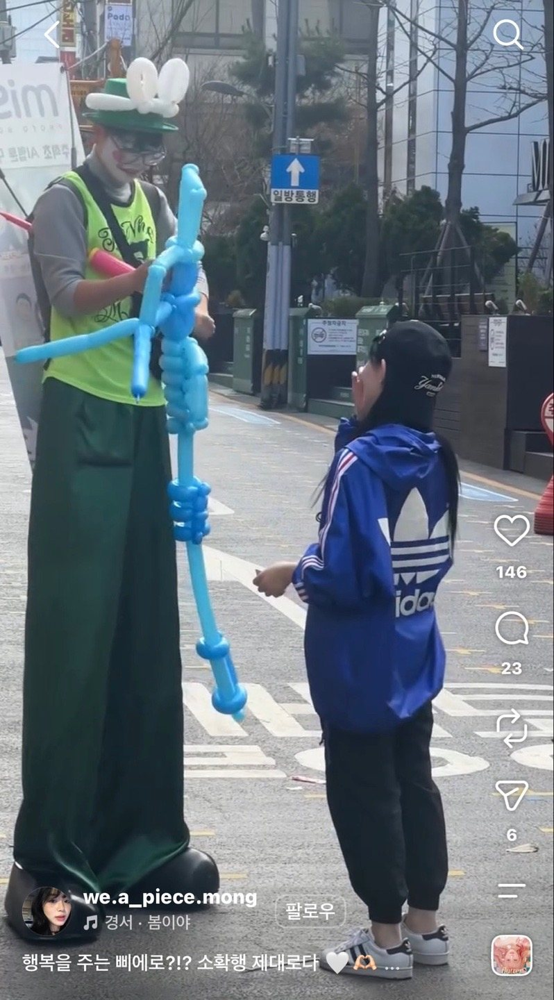
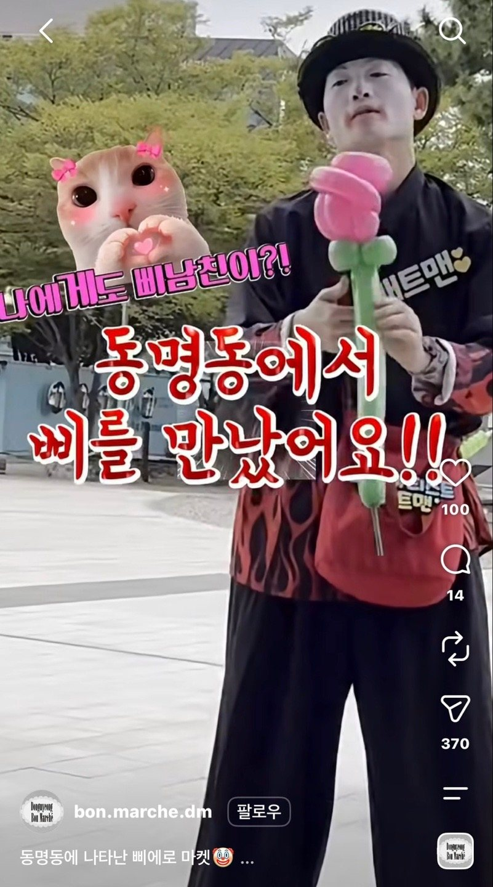
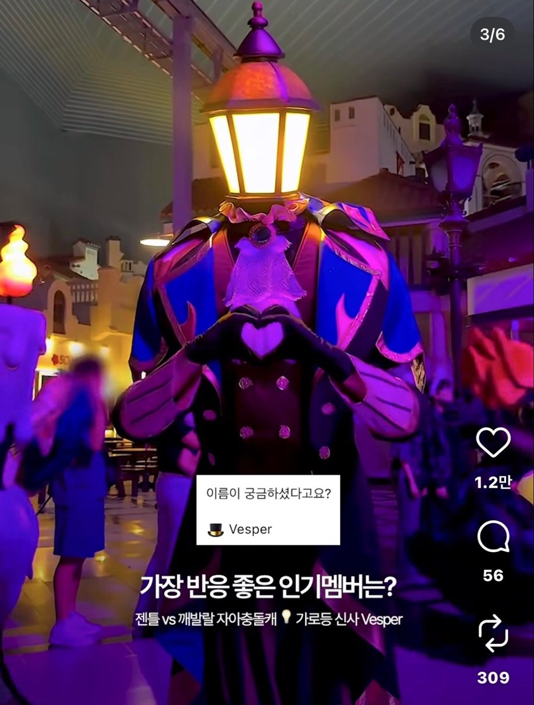
| 레퍼런스 | 엠엘삐 적용 |
|---|---|
| NPC 알바 구함 D-1·2 | ‘엠엘삐 구인공고’ — 실제 퍼포머 채용 + 업무 안내 카드(서울 곳곳 출몰 · 풍선등 배포 · 커브패딩 착용). 공고 이미지가 첫 티징 콘텐츠 |
| ‘삐’ 어휘 D-3~5 | 공고와 캡션에 선배삐 · 신규삐 · 정통삐 같은 밈 어휘를 섞어, 밈을 아는 사람이 먼저 알아보게 |
| 딱지맨 찾기 D-6·7 | 엠엘삐 지도 — 출몰 위치를 지도 핀으로 공개, 현장에서는 “오늘 여기서 만나요” 팻말 |
| 댓글로 다음 출몰 D-10 | 댓글에 ‘엠엘삐’를 남기면 다음 출몰 장소를 알려주는 방식 |
| 캐릭터 풍선 D-8 | 커브패딩 디자인 그대로의 풍선등 — 받은 사람이 들고 다니는 동안 계속 노출 |
| 정체 궁금증 · 캐릭터 소개 D-11·14 | “○○에 나타난 삐에로의 정체는?” → 엠엘삐 소개 · 인기 투표 콘텐츠로 캐릭터를 키움 |
| 소비자 게시 D-12·13 | “엠엘삐 만났어요” 인증을 공식 계정이 리포스트 |
MLB 최대 성공 사례의 엔진이 겨울에는 비어 있다는 점에서 출발했습니다.
온라인 티징으로 이름을 먼저 퍼뜨리고, 오프라인 출몰로 찍히게 하고, 공식 계정으로 제품을 회수합니다.
근거 수치는 CH.1–4 분석과 사내 보고에서 나온 것만 썼고, 외부 기사의 조회수 등은 넣지 않았습니다 · KV · OR은 AI 제작 시안 · 점선 박스는 레퍼런스 대기 자리 · 기대효과 목표 수치는 아이디어 선택 후 설정합니다.
| ID | 자료 | 지지하는 주장 | 상태 | 챕터 | 주의점 |
|---|---|---|---|---|---|
| F01 | 기존 MLB 전체 진행 정리·자사 콘텐츠 분석 | 기존 버즈 사례, 패딩 버즈 과제 정의 | 내부 분석 | 01 | ‘패딩 콘텐츠가 전혀 없다’ 근거로 사용 금지 |
| F02 | DCS product_info | 성인 커브 IMC 11개, 성별·넥·충전재 구성 | 확인 | 01 | 제품별 속성 혼용 금지 |
| F03 | DCS customer_analysis | 판매 1,096점, 연령 확인 470점, 2030 38.7% | 확인 | 01 | 전체 구매자·콘텐츠 반응으로 확대 금지 |
| F04 | 사용자 제공 히어로 제품 이미지 | 비경량 히어로 4종 품번·제품명·시각 | 사용자 제공 | 01·05 | 공식 컬러명·최종 제품명 재확인 |
| F05 | 26 WINTER CITY POP-UP 기획안 | 11/7–9 팝업, 카리나·미션·DP의 역할 | 확인 | 01·05 | 첨부안 이후 일정·SKU 변경 여부 확인 |
| F06 | 26FW 커브패딩 IMC 메인 아이템 방향 | 캠페인 초점과 11/15 이후 집행 | 사용자 제공 | 전 장 | 사내 전략 전제임을 유지 |
| F07 | TWS 숏폼 드라마 3종 세트 ① 원 기획서 — 26SS SUMMER 보고 및 전략 0519.pptx ② 회의 기록 — 260610 영업-마케팅 IMC ③ 전수 실측 — 게시물 7건·댓글 549건 (2026-10-07) | 제품이 플롯의 동력이 된 자사 사례, 회차별 좋아요·제품 관련 댓글 비중, 빈칸 포맷의 밈화, 수집 범위 내 파생 표현 | 기획서·회의록·실측 | 01·05 | 댓글 549/1,048건(52.4%) 수집분 · 조회수·공유수 미확보 · 영상 내부 미시청 · 해시태그 표본 각 24건 |
| C01 | 코스토니 캠페인 원장 | 티저→퀴즈→언락→반전의 순서와 내부 반응 | 확인 | 02 | 패딩 직접 경쟁 아님, 인과 단정 금지 |
| C02 | 블랙야크 BCC·모델·커뮤니티 자료 | 기능 자산을 문화·현장·히어로 제품으로 누적 | 공식·보도 | 02 | ‘아재 브랜드 탈피 완료’ 단정 금지 |
| C03 | 블랙야크 25FW·26FW 보도 | 판매율·리오더·초기 판매 신호 | 회사 제공 | 02 | 독립 조사처럼 말하지 않음 |
| C04 | 노스페이스 화이트라벨 PROJECT DOWN | GUESS WHO→제품→공간의 공개 순서 | 공식 게시물 | 02 | 댓글은 기다림·참여 신호, 구매 선호 아님 |
| C05 | 휠라 에어플로우 공식 발표 | 선발매→에디션→정규, 시각적 식별 장치 | 공식 발표 | 02 | 준비 물량 미공개 품절 |
| C06 | 무신사 스탠다드 다운 프리뷰 | 직접 착용·라이트/헤비 비교·선택 경험 | 공식 콘텐츠 | 02 | 이벤트 댓글을 성과에서 제외 |
| C07 | 헬리녹스 웨어 이클립스 팩 다운 | 기술 수치·디자인상·플래그십 경험의 결합 | 공식·보도 | 02 | 기술 주장이 MLB 제품으로 전이되지 않음 |
| T01 | Reali-TEA, Emotional ROI, why-to-buy | 본문 제외 | — | 한국 2030 자료 아님 → 국내 334건으로 교체 | |
| T02 | GRWM·룩북·outfit construction | 본문 제외 | — | 한국 2030 자료 아님 → 국내 334건으로 교체 | |
| T03 | GRWM loading·before-after·OOTD Stop | 본문 제외 | — | 글로벌 포맷 정리. 제작 참고로만 보존 | |
| T04 | 빙하기 온다, L을 가져가, 포기/진행 | 본문 제외 | — | 사용할 밈을 아직 정하지 않음. 집행 7–10일 전 재선정 | |
| T05 | 하이넥·퍼널넥·조형적 아우터 방향 | 본문 제외 | — | 한국 소비자 자료 아님. 스타일링 참고로만 보존 | |
| T06 | 국내 마케팅 매체 334건 전수 분석 고구마팜 206 · 캐릿 128 / 2026.04.01–10.08 · 선정 매체 전수 검토(시장 전체 전수 아님) CH.3 트렌드 분석의 근거 | 용어 2,676개의 관측 월 수(95.1%가 한 달의 기사에서만 관측), 3개월 이상 관측 37개의 네 축, 소비자 동작 빈도, 유통 포맷 빈도, 발화점·확산 경로, 발화 2,342건 분류 | 전수 확인 | 03·04 | 국내 마케팅 매체 보도 기준. 소비자 패널·연령 분리 자료 아니며 패딩 카테고리 전용 아님. ‘2030이 반응했다’로 쓰지 않음 |
| Q01 | 향후 Sometrend 비경량 패딩 조회 | 주차별 언급량·연관어·11월 중순 시점 검증 | 검증 대기 | 03 | 전체 패딩과 경량패딩 분리, 총량 표기 |
| 기존 자료·논리 | 판단 | 대체 또는 수정 방식 |
|---|---|---|
| MLB 볼캡·비니·브랜드 버즈 사례 | 사용 CH.1 | ‘기존 버즈 역량’ 근거로만 사용 |
| 기존 패딩 화보·콘텐츠 | 사용 CH.1 | 존재를 인정하고 ‘패딩이 전개와 행동의 주인공이었는가’를 질문 |
| ‘패딩 버즈가 전혀 없다’ | 제외 | ‘패딩을 주인공으로 만들어내는 버즈가 상대적으로 부족’으로 수정 |
| ‘12월이 비어 있다’ | 제외 | 팝업 이후 제품 구별·착장·선택이라는 역할 전환으로 대체 |
| 연말 트렌드를 갑자기 제시하는 흐름 | 제외 | 지속 포맷 분석 → 패딩 필요 시점 → 겨울 일정 순서로 재배치 |
| 크리스마스 메인 아이디어 | 조정 | 전체 분석의 전제는 아니며, 메시지를 주고받는 A안의 시즌 맥락으로 검토 |
| 매거진 게시물 반응 비교 | 제외 | 경쟁사의 콘텐츠·비주얼·제품 언어를 찾는 자료원으로만 사용 |
| 코스토니 | 사용 CH.2 | 패딩 경쟁이 아니라 제품을 화제화한 구조 사례로 명시 |
| 블랙야크 클라이밍 | 사용 CH.2 | ‘아재 탈피’가 아니라 기능 자산의 문화·현장·제품 누적 과정 |
| 노스페이스 눕시 | 본문 제외 | 화이트라벨 PROJECT DOWN이 공개 전략을 더 명확히 보여줌 |
| 화이트라벨 / 휠라 / 무신사 / 헬리녹스 | 사용 CH.2 | 기다림·식별·비교·신뢰의 네 사례로 고정 |
| 기존 전체 패딩 언급 추이 차트 | 보류 | 경량패딩 분리와 총 게시물 수가 없는 상태에서는 사용하지 않음 |
| 날씨–연말 시간차 차트 | 보류 | 비경량 패딩 언급과 동일 기간 기온 데이터 확보 후 재작성 |
| 글로벌 트렌드 자료 TikTok Next · YouTube C&T · Later · 해외 에디토리얼 | 전면 제외 | 한국 2030 자료가 아님 → 국내 매체 334건 전수 분석으로 교체 |
| 현재 10월 밈 3종 평가표 | 전면 제외 | B·D에서 후보 문법(실링팬 전환 · ‘OO삐’ 호칭)을 검토했으며, 채택 여부는 집행 7–10일 전 게이트로 결정 |
| 특정 아이디어 단독 확정 | 본문 제외 | 비교 대상 없이 한 안을 선정하면 그 안을 정당화하려 근거를 고르게 됨. 기준 확정까지만 본문에 두고, 초안은 복수로 받아 대조표로 비교 |
| NEXT CURVE | 폐기 | 기준 3 탈락 — 단서·미션·언락 구조가 윈터시티 팝업과 중복 |
| 커브 트리·오너먼트 | A안으로 채택 | 이전 단계에서는 서브 비주얼로 축소했으나, 제품 디자인을 오너먼트로 옮기고 실제 제품 컷과 함께 보여주는 조건으로 A안에 채택 (결정 이력) |
| DCS 2030 수치 | 제한 사용 CH.1 | 연령 확인 470점의 38.7%로 정확히 표기 |
| 할인·가격·구매 혜택 | 전면 제외 | 제품의 시각적 차이·선택 이유·스타일 맥락으로 대체 |
출처 — 내부: MLB 인턴과제 전체 진행 정리, DCS product_info·customer_analysis, 26 WINTER CITY POP-UP 기획안, 사용자 제공 히어로 제품 이미지, TWS 숏폼 드라마 원 기획서(26SS 5월 보고 0519)·260610 영업-IMC·게시물 7건 전수 실측. 경쟁사: 블랙야크(패션인사이트·뉴스핌), 휠라(미스토홀딩스), 무신사 스탠다드, 헬리녹스, 노스페이스 화이트라벨 공식 게시물. 트렌드: 국내 마케팅 매체 334건 전수 분석(고구마팜 206 · 캐릿 128, 2026.04.01–10.08) — 글로벌 플랫폼 보고서와 해외 에디토리얼은 본문에서 제외.
주의 — 링크가 있다는 사실만으로 모든 주장이 확정되지 않습니다. 실제 PPT에는 해당 주장을 직접 지지하는 원문 화면·게시일·계정·수치의 분모를 붙이고, 회사 제공 수치와 분석자의 해석을 구분합니다.
2026.10.09 기준 · 실제 PPT 디자인 전 발표 설계서